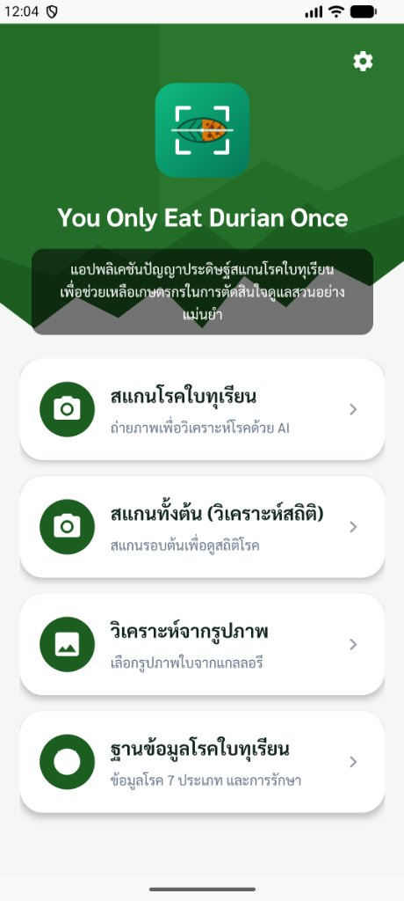
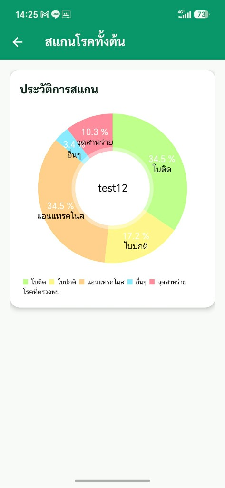
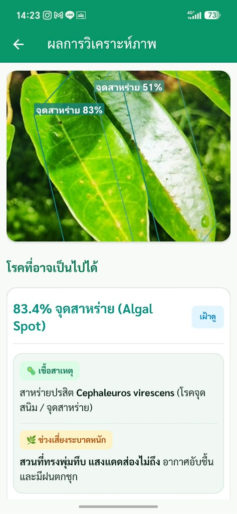
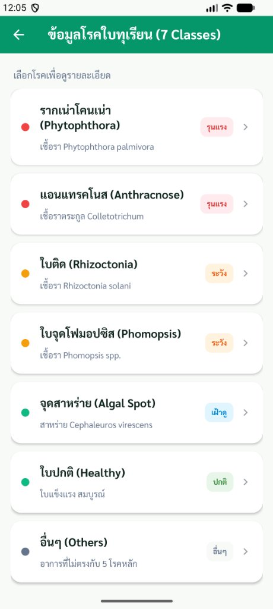

แอปฟรีสำหรับชาวสวนทุเรียน (Android)
ส่องกล้องตรวจใบทุเรียน รู้โรคไว ใช้ได้แม้ไม่มีเน็ต
เดินดูสวนแล้วเจอใบจุด ใบเหลือง หรือใบไหม้ ไม่ต้องเดาเองหรือรอสัญญาณเน็ต แค่เปิดแอป YOEDO ส่องไปที่ใบทุเรียน แอปจะช่วยบอกชื่อโรคที่น่าจะเป็น พร้อมวิธีดูแลเบื้องต้นให้ทันที
ทำงานได้ในสวนที่ห่างไกล
รองรับภาษาไทยและอังกฤษ
ฟรี ไม่มีโฆษณา
ความร่วมมือระหว่างมหาวิทยาลัยบูรพากับโรงเรียนมหิดลวิทยานุสรณ์





หน้าหลักภาษาไทย ปุ่มใหญ่กดง่าย เลือกสแกนใบ ดูสถิติ หรืออ่านวิธีรักษาได้ทันที